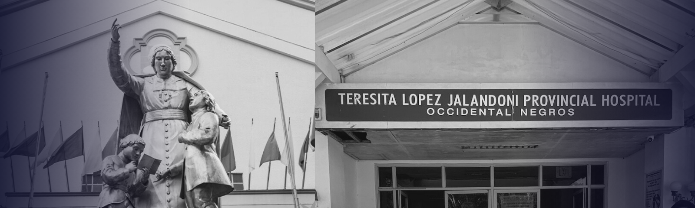

Kheziah Nicole Cusay
Bacolod City, Negros Occidental
cusay.kheziahnicole@gmail.com
+63 995 418 9439
November 09, 2025
Atty. Simeon C. Obtinalla, Jr.
Chief Human Resources Officer
St. Luke’s Medical Center
279 E Rodriguez Sr. Avenue, Quezon City, Philippines
Dear Atty. Obtinalla Jr.,
I am a Registered Nurse with three years of hospital experience, and I am writing to express my interest in the Staff Nurse position at St. Luke’s Medical Center. I learned about this opportunity through your hospital’s official website and from colleagues who spoke highly of St. Luke’s commitment to world-class healthcare and compassionate service. I am deeply inspired by your institution’s reputation for excellence, innovation, and continuous professional growth, and I am eager to contribute my skills to your team.
I have gained two years of experience in the Medical-Surgical Ward and one year in the Emergency Department at Teresita L. Jalandoni Provincial Hospital, where I provided patient-centered care in both stable and critical settings. My background has strengthened my clinical judgment, adaptability, and teamwork under high-pressure conditions. I am skilled in patient assessment, medication administration, emergency interventions, and interdisciplinary collaboration. I take pride in maintaining professionalism, ethical practice, and a caring attitude toward every patient I serve.
I am genuinely enthusiastic about the possibility of joining St. Luke’s Medical Center, where I can continue to grow and serve within a culture of excellence and compassion. I would be grateful for the opportunity to discuss how my experience and values align with your hospital’s mission. I look forward to the possibility of an interview at your convenience.
Thank you for your time and consideration.
Respectfully yours,
Kheziah Nicole Cusay